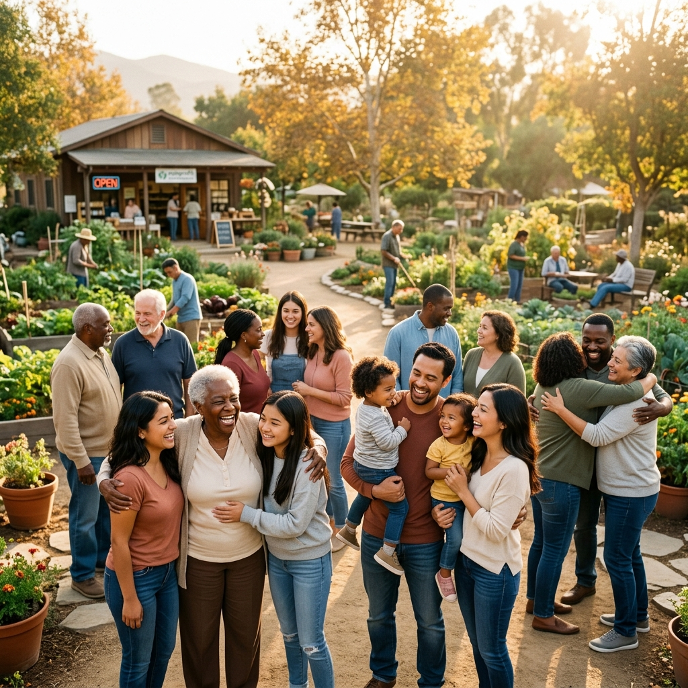

Founder & Provider · Sincerely You Are Significant, Inc.
A servant leader dedicated to human services, youth empowerment, and family restoration — building a lasting foundation of hope, dignity, and stability in Stockbridge, GA.
Bianca Reid serves as the Founder and Provider of Sincerely You Are Significant, Inc. — a 501(c)(3) human services nonprofit organization established to be a pillar of guidance, compassion, and stability.
Rooted in Stockbridge, Georgia, Bianca’s calling was birthed from a deep desire to ensure that no individual feels invisible, abandoned, or without a future. Under her leadership, SYS provides a supportive environment for youth discovering their life direction, seniors needing compassionate care and connection, and families navigating complex hardships.
Verified Personal Values
"Write the vision and make it plain, that he may run who reads it."
Habakkuk 2:2 · NKJVAs Founder and Provider, Bianca Reid established Sincerely You Are Significant, Inc. out of a heartfelt dedication to human services. Her focus is simple yet profound: creating a dependable, faith-rooted sanctuary where youth gain direction, families find resilience, and every individual is affirmed in their intrinsic worth.
For Bianca Reid, human services is not simply an organizational sector — it is a heartfelt calling to be the hands and feet of restorative love in the community.
Every community faces unseen struggles: young people yearning for mentors who genuinely believe in them; seniors experiencing isolation; families stretched thin by economic and emotional pressures. Bianca envisioned SYS as an accessible sanctuary where help is delivered with honor, transparency, and personal warmth.
Whether meeting by appointment at the Jonesboro office or coordinating community programs in Stockbridge and surrounding Henry County, Bianca's approach centers on walking alongside people step-by-step — helping them realize their God-given potential and lasting significance.
The core philosophy guiding every SYS program
Bianca operates on the belief that when you invest in People, awaken their Purpose, and unlock their Possibility, entire communities are permanently transformed.

"Building community stability through genuine fellowship, hands-on mentorship, and supportive human services."
Rooted in Habakkuk 2:2 and guided by purpose, Bianca has shaped Sincerely You Are Significant upon four enduring pillars of human services and community impact.
Every person carries unique gifts, potential, and inherent dignity. Bianca's programs provide the guidance, tools, and positive reinforcement necessary for individuals to overcome obstacles and walk in their significance.
Healthy, stable families are the bedrock of flourishing neighborhoods. Bianca works directly with households to build resilient family foundations, navigate life crises, and foster lasting peace at home.
Isolation weakens, but community heals. Bianca facilitates collaborative spaces, outreach programs, and fellowship events across Stockbridge and Henry County where neighbors unite to lift one another up.
Anchored in faith and biblically directed, SYS operates with an eternal perspective — ensuring that every act of service, every dollar invested, and every relationship cultivated bears fruit that remains.
These five personal values serve as Bianca's moral compass and leadership foundation — shaping how she serves, listens, leads, and inspires.
Rooted in trust and divine calling. Living out the conviction that God has an intentional, hopeful plan for every life.
Recognizing the inherent dignity, worth, and significance of every individual who seeks guidance and hope.
Strengthening households through stability, generational support, and nurturing environments where all can thrive.
Uniting Stockbridge and Henry County neighbors into an inclusive circle of mutual encouragement and fellowship.
Translating vision into actionable transformation — changing trajectories and advancing Kingdom purpose daily.
"Write the vision and make it plain,
that he may run who reads it."
Habakkuk 2:2 · New King James Version
This scripture is the heartbeat of Bianca Reid’s leadership. The vision has been written clearly: every youth guided, every life empowered, every future fortified, and every soul reminded that they are unconditionally significant.
Whether you are seeking human services assistance, looking to volunteer, interested in community partnership, or wish to support our 501(c)(3) mission, Bianca and the SYS team would love to hear from you.